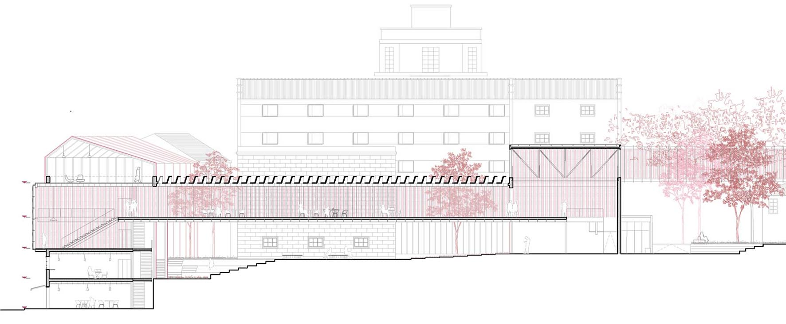
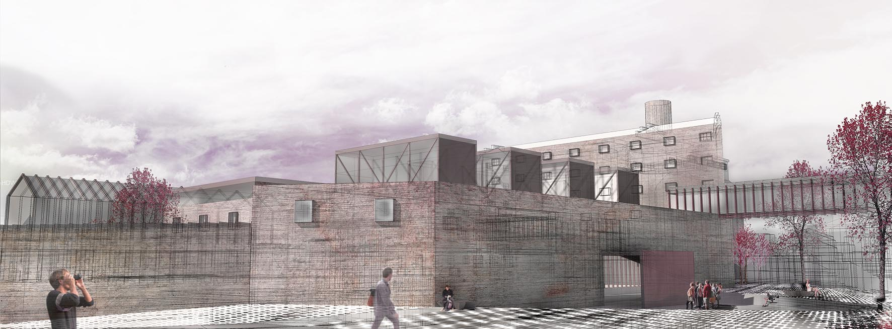

maqueta de desarrollo de proyecto

vista aérea del conjunto

sección pasarela principal

planta de acceso

entrada principal

vista del patio interior
El proyecto se encuentra situado en el complejo de “La Panificadora”, una antigua fábrica de pan abandonada situada en
la ciudad de Vigo, en el que se detectan tres problemas/condicionantes fundamentales: el estado de abandono e incluso
ruina de las edificaciones existentes; el aislamiento de la parcela en relación al tejido urbano, funcionando ésta como
una isla cerrada e impermeable; y el gran desnivel existente entre la Plaza del Ayuntamiento y la Rua Falperra.
Para solucionar estos inconvenientes y revitalizar el conjunto, se proponen una serie de usos que lo conviertan en un
foco de actividad atractivo para la ciudad. El nuevo programa se ubicará en los edificios existentes que se puedan rehabilitar
y recuperar, mientras que las construcciones en estado de ruina serán eliminadas, limpiando el conjunto para crear un
espacio público continuo en el interior de la parcela.
A la rehabilitación de los edificios se suman 3 estrategias de proyecto:
1.- Creación de nuevas cubiertas con lucernarios sobre las cubiertas eliminadas en los espacios destinados a exposiciones.
2.- Disposición de 5 pasarelas que comunican transversalmente los edificios rehabilitados , conectando usos y espacios
para generar flujos y desarrollos de actividades conjuntas y recuperando la estructura original de pasarelas de hormigón.
3.- Ampliación con costillas metálicas, sobre las edificaciones existentes de la Rua Falperra para acoger el programa
de vivienda social.
A la hora de concretar el programa del proyecto se proponen usos que potencien la integración y revitalización de la
manzana y su entorno urbano. Para ello se diversifica el programa con la participación del usuario y con actividades
complementarias entre sí, permitiendo, tanto a los usuarios como a los visitantes, participar en los procesos de investigación,
desarrollo, creación y participación. Se disponen espacios de trabajo según los nuevos modelos laborales, como zonas
de coworking y viveros de empresa. A ese programa de ''creación'' lo complementan nuevos espacios para la exposición
y comunicación de los proyectos desarrollados: aulas polivalentes de formación y seminarios; salas de exposición, conciertos
y performances y talleres de producción.
El silo, antiguo edificio de almacenaje de grano, se plantea el almacenaje de información, albergando las tecas: biblioteca,
comicteca, videoteca...así como salas de lectura y proyección.